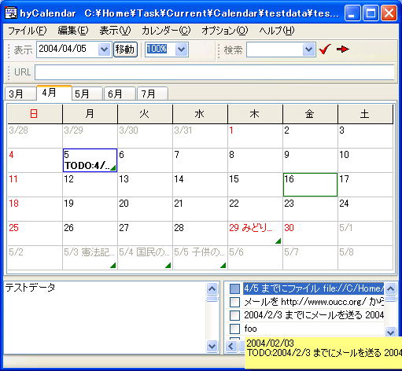
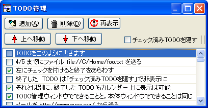

[TODOの表示] [TODOの操作] [TODO管理ダイアログからの操作]
TODOは，カレンダーとは独立したリストとして管理されます．
TODOとして作成した文字列に日付が含まれている場合，その日の予定として
表示することができます．

[TODOの表示] [TODOの操作] [TODO管理ダイアログからの操作]
TODOリストは，基本的に，ウィンドウ右下に表示されるようになっています．
TODOリストを使用しない場合は，メニュー[表示]-[TODOリスト]を選択することで，
表示・非表示を切り替えることができます．
設定ダイアログの[終了時のウィンドウレイアウトを保存する]
オプションが有効になっていれば，hyCalendar を終了してもこの状態が保存されます．
日付を含んだTODOをカレンダー上に表示するかどうかを，設定ダイアログの[カレンダー表示]タブにある
[ToDoリスト表示]欄で設定することができます．
[TODOの表示] [TODOの操作] [TODO管理ダイアログからの操作]
TODOリストに対する，チェックを付ける/外す以外のアクセスは，
右クリックによるコンテキストメニューで行います．
また，TODOリストにフォーカスが当たっている間は，
ショートカットキーも使用できます．
- [新しいTODOを追加] を選ぶと，TODOリストの末尾に
新しい項目が追加され，編集状態になります．好きな文字列を設定してください．
ここに記述する文字列もまた，自動ハイパーリンクの対象です．
また，TODOに関する設定によっては，
カレンダーの対応する日付に，TODO項目の文字列を表示することができます．
- [選択したアイテムを編集] を選ぶと，そのアイテムを編集状態にします．
アイテムを１度だけクリックした場合にも，同様の効果が発生します．
編集が終了したら，Enter キーの押下あるいは他の項目をクリックすることで編集を終了します．
（注意: ESC キーは Windows 標準のキー操作の都合で，
編集のキャンセルが割り当てられています．
これは，日付メモの編集終了と一貫しておらず，現在の hyCalendar の持つ弱点です．）
- [選択したアイテムを削除] を選ぶと，そのアイテムを削除します．
- [上へ移動][下へ移動] を選ぶと，そのアイテムを一つ上下へ移動することができます．
- [リストをクリップボードにコピー]を選択すると，
クリップボードへコピーするためのダイアログが開きます．
詳細はこちら．
- [最新の状態へ更新] を選ぶと，リストの表示を更新します．
通常は，[チェック済みTODOを隠す] オプションを有効にしている場合，
チェックを付けたTODOを即座に隠すために使用します．
- アイテムの左に付いているチェックボックスにチェックを付けることで，
「このTODOは終了した」ということを示すことができます．
TODO管理ダイアログにおいて，[チェック済みTODOを隠す] にチェックを付けると，
終了したTODOを隠しておくことができます．
[チェック済みTODOを隠す]がチェックされた状態で
[上へ移動][下へ移動]を使用すると，表示されていないアイテムは
すべて飛ばします．たとえば，[上へ移動]であれば，
選択したアイテムの１つ上に表示されている（見かけ上隣接している）アイテムの
上側まで一度に移動します．
[TODOの表示] [TODOの操作] [TODO管理ダイアログからの操作]
TODO リストの編集用に，TODO管理ダイアログが用意されています．
[カレンダー]-[TODO管理] を選択すると，ダイアログが開きます．

このダイアログからできる作業は，[チェック済みTODOを隠す]オプションの
設定ができることを除けば，メインウィンドウでできることと同じです．
２つのリストは連動しており，一方を変更すると，残る一方も自動で更新されます．